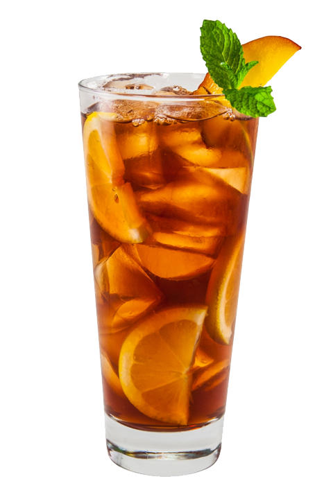

BEBIDAS MENÚ
Limonada $25
×
La limonada es una bebida refrescante y popular en todo el mundo, especialmente en climas cálidos. Se elabora a partir de limones frescos, agua y azúcar, y se puede personalizar según las preferencias del consumidor agregando diferentes ingredientes, como hierbas frescas, frutas o jugos. |
La limonada es una bebida refrescante y popular en todo el mundo, especialmente en climas cálidos. Se elabora a partir de limones frescos, agua y azúcar, y se puede personalizar según las preferencias del consumidor agregando diferentes ingredientes, como hierbas frescas, frutas o jugos. | Naranjada $25
×
La naranjada es una bebida refrescante elaborada a partir de jugo de naranja recién exprimido, agua y azúcar. Es una bebida muy popular en todo el mundo debido a su sabor dulce y ácido, así como a su alto contenido de vitamina C y otros nutrientes esenciales. |
La naranjada es una bebida refrescante elaborada a partir de jugo de naranja recién exprimido, agua y azúcar. Es una bebida muy popular en todo el mundo debido a su sabor dulce y ácido, así como a su alto contenido de vitamina C y otros nutrientes esenciales. |
|  Té Helado $20
×
El té helado es una bebida refrescante y popular en todo el mundo, especialmente en climas cálidos. Se elabora a partir de hojas de té frescas, agua y azúcar, y se puede personalizar según las preferencias del consumidor agregando diferentes ingredientes, como frutas, hierbas frescas o jugos. |
El té helado es una bebida refrescante y popular en todo el mundo, especialmente en climas cálidos. Se elabora a partir de hojas de té frescas, agua y azúcar, y se puede personalizar según las preferencias del consumidor agregando diferentes ingredientes, como frutas, hierbas frescas o jugos. | Café Frappé $30
×
El café frappé es una bebida helada muy popular en todo el mundo, especialmente en climas cálidos, se elabora a partir de café molido fresco, agua, azúcar, leche y hielo, y se sirve en un vaso alto con una pajilla. |
El café frappé es una bebida helada muy popular en todo el mundo, especialmente en climas cálidos, se elabora a partir de café molido fresco, agua, azúcar, leche y hielo, y se sirve en un vaso alto con una pajilla. |
 Agua de Horchata $30
×
El agua de horchata tiene un sabor dulce y cremoso debido al arroz, la canela y el azúcar. Es una bebida muy refrescante que se sirve fría con hielo y se puede personalizar según las preferencias del consumidor, agregando más o menos canela o ajustando la cantidad de azúcar. |
El agua de horchata tiene un sabor dulce y cremoso debido al arroz, la canela y el azúcar. Es una bebida muy refrescante que se sirve fría con hielo y se puede personalizar según las preferencias del consumidor, agregando más o menos canela o ajustando la cantidad de azúcar. |  Agua de Jamaica $30
×
El agua de jamaica tiene un sabor refrescante y ligeramente agrio debido a las flores de hibisco. También es rica en vitamina C y antioxidantes, lo que la convierte en una bebida saludable y refrescante para disfrutar en cualquier momento. |
El agua de jamaica tiene un sabor refrescante y ligeramente agrio debido a las flores de hibisco. También es rica en vitamina C y antioxidantes, lo que la convierte en una bebida saludable y refrescante para disfrutar en cualquier momento. |
 Piña Colada $15
×
La piña colada es una bebida tropical y refrescante que se ha convertido en un clásico de la coctelería en todo el mundo. Se compone de ron, jugo de piña y crema de coco, que se mezclan y se sirven en un vaso alto con hielo. |
La piña colada es una bebida tropical y refrescante que se ha convertido en un clásico de la coctelería en todo el mundo. Se compone de ron, jugo de piña y crema de coco, que se mezclan y se sirven en un vaso alto con hielo. |  Gin-tonic $35
×
El gin tonic es un cóctel clásico y popular que se compone de ginebra y agua tónica, servido en un vaso alto con hielo y decorado con rodajas de limón o lima. Es una bebida refrescante y con un sabor amargo debido a la quinina presente en el agua tónica. |
El gin tonic es un cóctel clásico y popular que se compone de ginebra y agua tónica, servido en un vaso alto con hielo y decorado con rodajas de limón o lima. Es una bebida refrescante y con un sabor amargo debido a la quinina presente en el agua tónica. |
Daiquiri $35
×
El gin tonic es un cóctel clásico y popular que se compone de ginebra y agua tónica, servido en un vaso alto con hielo y decorado con rodajas de limón o lima. Es una bebida refrescante y con un sabor amargo debido a la quinina presente en el agua tónica. |
El daiquiri es un cóctel clásico que se originó en Cuba y se ha popularizado en todo el mundo. Se compone de ron blanco, jugo de limón fresco y jarabe de azúcar, mezclados y servidos en un vaso de cóctel. |  Cerveza $35
×
La cerveza es una bebida alcohólica que se produce a partir de granos de cereal, como la cebada o el trigo, que se fermentan con levadura y otros ingredientes. Es una bebida de sabor amargo y refrescante, con una amplia variedad de estilos y sabores que varían según la región y el método de elaboración. |
La cerveza es una bebida alcohólica que se produce a partir de granos de cereal, como la cebada o el trigo, que se fermentan con levadura y otros ingredientes. Es una bebida de sabor amargo y refrescante, con una amplia variedad de estilos y sabores que varían según la región y el método de elaboración. |
 Blackberry Mojito $35
×
El blackberry mojito es una bebida refrescante y dulce con un toque de acidez y sabor a menta. La adición de las moras negras le da un toque frutal que complementa bien el sabor del ron y la menta. Esta bebida es una opción popular durante los meses de verano y es perfecta para disfrutar en una terraza o junto a la piscina. |
El blackberry mojito es una bebida refrescante y dulce con un toque de acidez y sabor a menta. La adición de las moras negras le da un toque frutal que complementa bien el sabor del ron y la menta. Esta bebida es una opción popular durante los meses de verano y es perfecta para disfrutar en una terraza o junto a la piscina. |  Mojitos Sobores $35
×
El mojito es una bebida refrescante y dulce con un toque de acidez y sabor a menta. Es perfecto para disfrutar en un día caluroso de verano o como acompañamiento de una cena en un ambiente relajado. También es común añadir frutas como fresas o frambuesas para dar un toque frutal y aún más refrescante. |
El mojito es una bebida refrescante y dulce con un toque de acidez y sabor a menta. Es perfecto para disfrutar en un día caluroso de verano o como acompañamiento de una cena en un ambiente relajado. También es común añadir frutas como fresas o frambuesas para dar un toque frutal y aún más refrescante. |